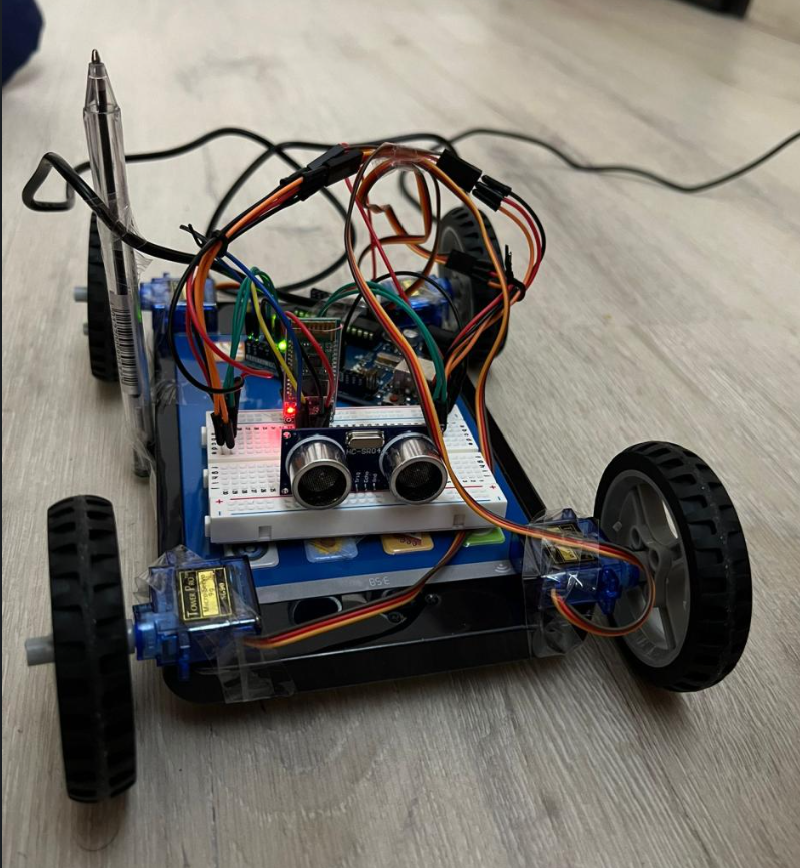

I developed a fully functional remote-controlled vehicle based on the Arduino platform. This project bridges hardware integration with real-time software logic to create a versatile mobile robot.
This snippet demonstrates the main loop structure, showcasing how data is parsed from the serial Bluetooth module and how the obstacle avoidance logic is implemented using non-blocking sensor readings.
//scrivere un codice che se mandi dal seriale bluetooth 1 va col bluetooth, se mandi 2 va con il sensore a ultrasuoni #include//includi la libreria del servo int ServoPinBL = 10; //il pin da cui mandi il PWM per le ruote di sinistra back int ServoPinFL=11; //il pin da cui mandi i PWM per le ruote di sinistra avanti int ServoPinFR=3; int ServoPinBR=5; Servo ruotaFR; //nome alla ruota davanti a destra Servo ruotaFL; //nome alla ruota davanti a sinistra Servo ruotaBR; //B sta per back Servo ruotaBL; char stop='stop'; char avanti='go'; char indietro='back'; char sinistra = 'sin'; char destra = 'dx'; char command='0'; //andrebbe s lol void setup() { // put your setup code here, to run once: ruotaFR.attach(ServoPinFR); //per dire che la ruota front right è attaccata al pin 3 ruotaBR.attach(ServoPinBR); ruotaFL.attach(ServoPinFL); ruotaBL.attach(ServoPinBL); ruotaFR.write(90); ruotaFL.write(90); ruotaBR.write(90); ruotaBL.write(90); Serial.begin(9600); } void loop(){ if (Serial.available() > 0) { //condizione che controlla se ci sono dati //in arrivo dal modulo seriale (ad esempio, dal modulo Bluetooth HC-06 o dal monitor seriale del PC). //dentro le parentesi di serial.available non va nulla perchè devi solo chiamarla command=Serial.read(); //anche qua stai solo chiamando la funzione per leggere Serial.print(command); if (command == avanti){ ruotaFR.write(40); ruotaBR.write(40); ruotaFL.write(150); ruotaBL.write(150); Serial.println("Go"); } else if (command == indietro){ Serial.println("indietro"); ruotaFR.write(150); ruotaBR.write(150); ruotaFL.write(40); ruotaBL.write(40); Serial.println("back"); } else if (command == stop){ ruotaFR.write(90); ruotaBR.write(90); ruotaFL.write(90); ruotaBL.write(90); Serial.println("stop"); } else if (command == destra){ ruotaFR.write(130); ruotaBR.write(130); ruotaFL.write(130); ruotaBL.write(130); Serial.println("turn right"); } else if (command == sinistra){ ruotaFR.write(50); ruotaBR.write(50); ruotaFL.write(50); ruotaBL.write(50); Serial.println("turn left"); } //else { // Serial.println("comando non riconosciuto"); //} delay(20); } }